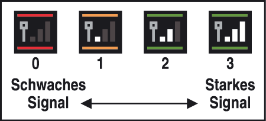

<!DOCTYPE html PUBLIC "-//W3C//DTD XHTML 1.0 Transitional//EN" "http://www.w3.org/TR/xhtml1/DTD/xhtml1-transitional.dtd">
<html xmlns="http://www.w3.org/1999/xhtml">
<head>
<meta http-equiv="Content-Type" content="text/html; charset=utf-8" />
<title>12. Bedingungen für die Verbindung mit einem Nintendo DS-System</title>
<script type="text/javascript" language="JavaScript" src='../../../../../js/shop.js'></script>
<script type="text/javascript" language="JavaScript" src='../../../../../js/sound.js'></script>
<script type="text/javascript" language="JavaScript" src='../../../../../js/images.js'></script>
<script type="text/javascript" language="JavaScript" src='../../../../../js/manual.js'></script>
<script type="text/javascript" language="JavaScript" src='../../../../../js/input.js'></script>
<link href="../common_data/cssfile.css" rel="stylesheet" type="text/css" />
</head>
<body onkeypress="kpress(false);" onload="initPage(); MM_preloadImages(
	'../common_data/CHM_common_source_ro/button_back_ro_noe.png',
	'../common_data/CHM_common_source_ro/button_next_ro_noe.png',
	'../common_data/CHM_common_source_ro/button_index_ro_noe.png',
	'../common_data/CHM_common_source_ro/button_index_top_ro_noe.png')">
<table width="100%" height="456" border="0" cellpadding="0" cellspacing="0">
<tr>
<td align="center" background="../common_data/CHM_common_source/title_top_bar.png"><table width="608" height="79" border="0" cellpadding="0" cellspacing="0">
<tr>
<td width="90" id="bgpagenumb"><div class="style_namber2k">12</div></td>
<td width="309"><div class="style_title_m" style="letter-spacing:-1px">Verbindungsbedingungen für Nintendo DS-Systeme </div></td>
<td width="123"><a href="../index.html" target="_parent" onclick="wiiReturnSound()" onmouseover="wiiFocusSound()"></a></td>
<td width="79"></td>
</tr>
</table></td>
</tr>
<tr>
<td height="285" align="center" valign="top"><table width="530" border="0" cellpadding="0" cellspacing="0">
<tr align="center">
<td width="478" valign="top" class="frame_margin"><div class="style_main">
  <p>Um Pokémon von <span style="font-variant:small-caps">Pok</span>é<span style="font-variant:small-caps">mon Diamant-Edition</span> oder <span style="font-variant:small-caps">Pok</span>é<span style="font-variant:small-caps">mon Perl-Edition</span> abzulegen oder mitzunehmen, müssen bestimmte Bedingungen erfüllt sein.</p>
<table width="478" border="0" align="center" cellpadding="0" cellspacing="0" class="spacer10t">
        <tr>
          <td width="12" height="12"></td>
          <td width="454" height="12"></td>
          <td width="12" height="12"></td>
        </tr>
        <tr>
          <td width="12" background="../common_data/CHM_common_source/kadomaru_line_l.png"></td>
          <td>
		  <div class="style_main">
		  <p class="style_main"><strong>Bedingungen</strong></p>
              <p class="style_main">Du musst in <span style="font-variant:small-caps">Pok</span>é<span style="font-variant:small-caps">mon Diamant-Edition</span> oder <span style="font-variant:small-caps">Pok</span>é<span style="font-variant:small-caps">mon Perl-Edition</span> den Pokédex und mindestens zwei Pokémon in deinem Besitz haben.</p>
            </div></td>
          <td width="12" background="../common_data/CHM_common_source/kadomaru_line_r.png"></td>
        </tr>
        <tr>
          <td width="12" height="12"></td>
          <td width="454" height="12"></td>
          <td width="12" height="12"></td>
        </tr>
      </table></div>
  <div class="spacer10t">
  <div class="style_main">
  <p class="caution0"><span class="style_main_xs" style="vertical-align:middle;">■</span>&nbsp;Erforderliche Bestandteile:</p>
				<p class="caution0"><span class="style_main_xs" style="vertical-align:middle;">●</span>&nbsp;Ein Nintendo DS oder Nintendo DS Lite (Ein System pro Spieler)</p>
			  <p class="caution0"><span class="style_main_xs" style="vertical-align:middle;">●</span>&nbsp;Eine Nintendo DS-Karte für das  Spiel <span style="font-variant:small-caps">Pok</span>é<span style="font-variant:small-caps">mon Diamant-Edition</span> oder <span style="font-variant:small-caps">Pok</span>é<span style="font-variant:small-caps">mon Perl-Edition</span> (Eine DS-Karte pro Spieler)</p>
  </div></div>
			    <div class="style_main">
  <div class="spacer10t">
			  <p style="margin-top:10px"><strong>Hinweis:</strong> Die Sprachversionen der Speicherdaten von <span style="font-variant:small-caps">My Pok</span>é<span style="font-variant:small-caps">mon Ranch</span> und der <span style="font-variant:small-caps">Pok</span>é<span style="font-variant:small-caps">mon Diamant-Edition</span>- oder <span style="font-variant:small-caps">Pok</span>é<span style="font-variant:small-caps">mon Perl-Edition</span>-Karte, die du verwenden möchtest, müssen übereinstimmen. Weitere Informationen über Spracheinstellungen findest du im Abschnitt <nobr>&bdquo;9. Software</nobr> starten und speichern&ldquo;.</p></div></div>
</div>
<div class="spacer20t"></div>
<div class="spacer10t">
      <div class="spacer10tu">
          <div class="frame_margin"><span class="style_heading_lc">Sicherheitshinweise in Bezug auf die Verwendung eines Nintendo DS-Systems als Controller</span></div>
      </div>
      <div class="spacer10tu">
          <div class="style_main">Achte bitte bei der Verwendung eines Nintendo DS-Systems als Controller auf Folgendes:</div>
      </div>
      <div class="style_main">
          <p class="caution0"><span class="style_main_xs" style="vertical-align:middle;">●</span>&nbsp;Das Symbol für die Drahtlose DS-Datenübertragung , das entweder auf dem <strong>Nintendo DS-Menübildschirm</strong> oder dem <strong>Spielbildschirm</strong> des Nintendo DS-Systems erscheint, zeigt an, dass die Drahtlose DS-Datenübertragung unterstützt wird.</p>
          <p class="caution0"><span class="style_main_xs" style="vertical-align:middle;">●</span>&nbsp;Das Symbol für die Signalstärke , das auf dem Bildschirm des Nintendo DS-Systems während der Verbindung erscheint, zeigt die Signalstärke in vier unterschiedlichen Stärken an.<br />
          </div>
               <div align="right">
			   
			   </div>
			</p>
			<div class="style_main">
			   <p class="cautionParagraph" style="margin-top:10px; margin-left:20px;"><strong>Hinweis</strong>: Sobald eine Drahtlose DS-Datenübertragung stattfindet, wird dies durch schnelles Blinken der Betriebsanzeige angezeigt.</p>
			   <p class="caution0"><span class="style_main_xs" style="vertical-align:middle;">●</span>&nbsp;Beachte bitte folgende Hinweise, um den bestmöglichen Ablauf bei Spielen via Drahtloser DS-Datenübertragung zu erzielen.</p>
        <p class="caution2">・&nbsp;Halte einen Abstand von maximal 10 Metern zwischen Nintendo DS-System und Wii-Konsole ein. Die Signalstärke sollte bei mindestens 2 Einheiten liegen, um die besten Resultate zu erzielen.</p>
        <p class="caution2">・&nbsp;Vergewissere dich, dass die Verbindung zwischen der Wii-Konsole und dem Nintendo DS-System nicht durch Personen, Wände, Möbelstücke oder andere große Gegenstände beeinträchtigt wird.</p>
        <p class="caution2">・&nbsp;Sollte die Verbindung während eines Spiels via Datenübertragung durch Geräte unterbrochen werden, die Funkfrequenzen stören können (wie zum Beispiel schnurlose Telefone, Mikrowellenherde oder drahtlose Netzwerke), dann sorge entweder dafür, dass die Wii-Konsole nicht in der Nähe solcher Geräte steht, oder schalte diese Geräte aus.</p>
      </div>


</td>
<td width="52" valign="top"></td>
</tr>
</table></td>
</tr>
<tr>
<td height="60" align="center"><table width="550" border="0" align="center" cellpadding="0" cellspacing="0">
<tr>
<td width="152" align="left"><a href="../page_11/page_11.html" target="_parent" onclick="wiiLeftScroll()" onmouseover="wiiFocusSound()"></a></td>
<td width="196" align="center"><a href="../index.html" target="_parent" onclick="wiiReturnSound()" onmouseover="wiiFocusSound()"></a></td>
<td width="152" align="right"><a href="../page_13/page_13.html" target="_parent" onclick="wiiRightScroll()" onmouseover="wiiFocusSound()"></a></td>
<td width="50"></td>
</tr>
</table></td></tr>
<tr>
<td height="32" background="../common_data/CHM_common_source/common_bottom.png"></td>
</tr>
</table>
</body>
</html>
